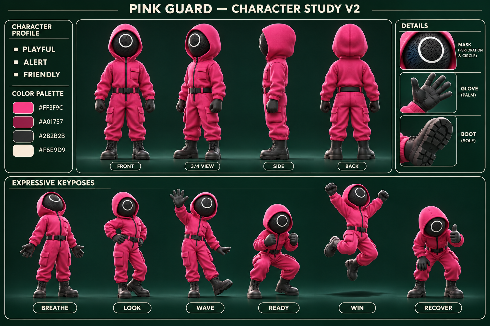

Design proposal: four turnaround views, material details, palette and six expressive key poses. The poses establish body mechanics for the next animation pass; this is a static character sheet, not a finished animation.

The previous six motion studies remain superseded drafts. No new animation or game replacement is included in this proposal.